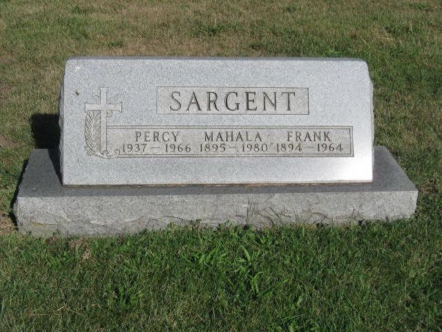
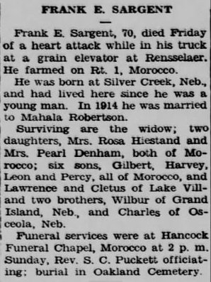
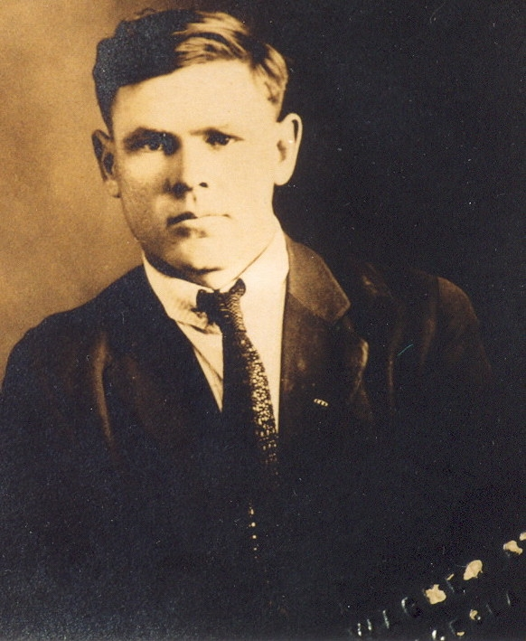
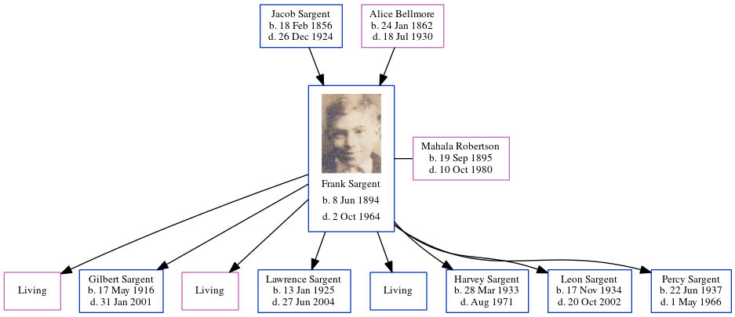

Frank Edward Sargent 1894 - 1964
[ Home ] | [ Calendar ] | [ Surnames Index ] | [ Census Index ] | [ Family History ]The child of Jacob Sargent and Alice Bellmore, Frank Sargent, the third cousin three-times-removed on the mother's side of Nigel Horne, was born in Silver Creek, Merrick, Nebraska, USA on Jun 8, 18941,2 and married Mahala Robertson (with whom he had 8 children: Rosa, Gilbert Jake, Pearl, Lawrence Leroy, Cletus Edward, Harvey A, Leon Burton and Percy B, along with 3 surviving children) in Kankakee, Illinois, USA on Feb 17, 19143.
During his life, he was living in Newton, Indiana, USA on Jan 1, 19205; in Jackson, Indiana on Apr 1, 19306; and in Lake Village, Indiana on Apr 18, 19404. He served in the military from 1917 to 1918 (world War I Draft Registration Cards).
He died on Oct 2, 1964 in Newton, Jasper, Indiana1 (coronary Thrombosis) and was buried at Oakland Cemetery, Morocco, Indiana on Oct 4, 1964.
Parents
- Jacob was born on Feb 18, 1856
- Alice Josephine was born on Jan 24, 1862
Children
- Gilbert Jake was born on May 17, 1916
- Lawrence Leroy was born on Jan 13, 1925
- Harvey A was born on Mar 28, 1933
- Leon Burton was born on Nov 17, 1934
- Percy B was born on Jun 22, 1937
Citations
- Social Security Death Index - Findmypast
- World War I Draft Registration Cards - Findmypast
- United States Marriages - Findmypast
- US Census 1940 - Findmypast (was age 46 and the head of the household)
- US Census 1920 - Findmypast (was age 25 and the head of the household)
- US Census 1930 - Findmypast (was age 37 and the head of the household)
Media
Frank Sargent - Mahala - gravestone

Frank Sargent Obituary

Frank Edward Sargent
Frank Sargent - 2

US Census 1920 - USC/1920/004965827/01068/001
US Census 1930 - USC/1930/004950635/01043/000
World War I Draft Registration Cards - USM/WWIDR/1669446947
Social Security Death Index - USBMD-SSDI-721072451
Family Tree
Generated by ged2site. Last updated on Jun 11, 2024